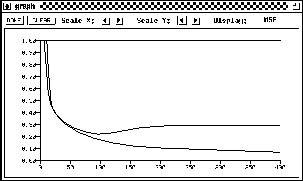

One of the major advantages of neural nets is their ability to generalize. This means that a trained net could classify data from the same class as the learning data that it has never seen before. In real world applications developers normally have only a small part of all possible patterns for the generation of a neural net. To reach the best generalization, the dataset should be split into three parts:
Figure  shows a typical error development of a
training set (lower curve) and a validation set (upper curve).
shows a typical error development of a
training set (lower curve) and a validation set (upper curve).
The learning should be stopped in the minimum of the validation set error. At this point the net generalizes best. When learning is not stopped, overtraining occurs and the performance of the net on the whole data decreases, despite the fact that the error on the training data still gets smaller. After finishing the learning phase, the net should be finally checked with the third data set, the test set.
SNNS performs one validation cycle every n training cycles. Just like training, validation is controlled from the control panel.